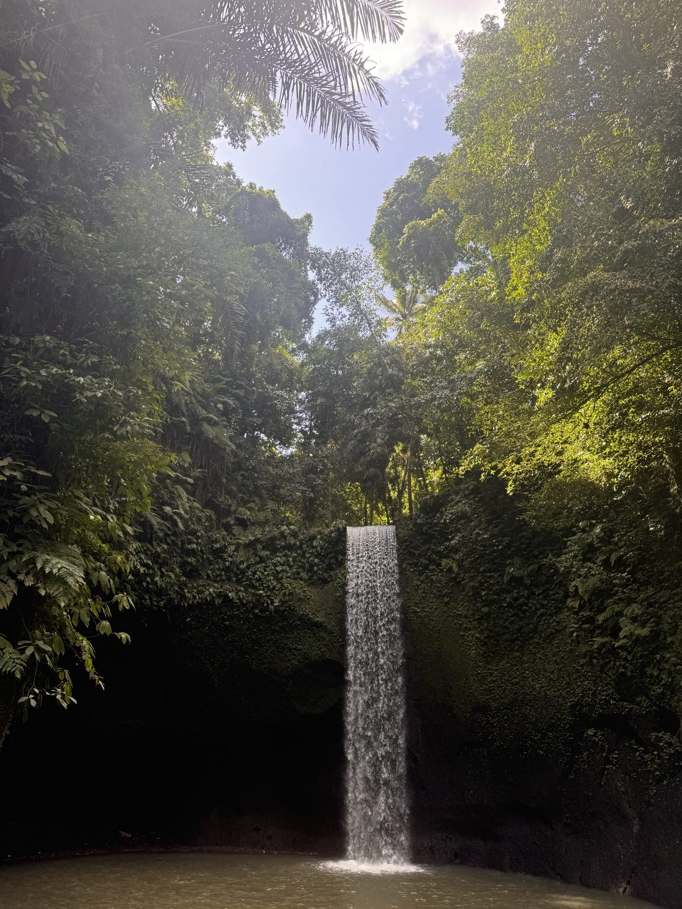

Rewilded SF
★★☆☆☆Published Last edited
Epistemic Status: Fictional
In the Redwood grove just north of the de Young, there are three hundred-foot Redwoods with auto-belays nailed to the trunk sixty feet up. One is a 5.4 with climbable branches the whole way, another a 5.10a with brown footholds discreetly nailed into the tree, and the third a 5.12a on which you have to hand-jam in cracks in the bark.
On Sundays there’s a water polo game in China Basin. A Croat and a Russian team had a bitter brawl there last year, and the Russians moved their game to Blue Heron Lake inside Golden Gate Park.
Also in Blue Heron Lake: sailing lessons on El Toros, and in the summers a water slide down from Strawberry Hill.
The apricot, persimmon, and pomegranate trees in the public orchard at what used to be Hunters Point have begun bearing fruit. Schoolchildren bike over to glean fallen fruit. Every July the locals host an apricot-preserving fair and share the jam with their neighbors.
The empty pavement by the basketball courts in SF’s Panhandle just had a parkour gym installed, to match exactly that seen in World Chase Tag. On Tuesday nights the line to play next lasts 30 minutes.
There’s a via ferrata you can take to the top of Sutro Tower, which books out months in advance.
The city banned internal combustion engines and human-driven cars. Every resident has access to a publicly run self-driving-car network.
After the ICE ban, tule elk, deer, turkeys, and coyotes began repopulating the tip of the peninsula. The deer particularly enjoy the Spanish rye grass in meadows that were once parking lots.
A survey of the city showed ambient noise averaging five decibels lower than in 2026, 10 decibels lower during rush hour.
Outside rush hour, kids play touch football and field hockey in the streets. There hasn’t been a traffic death since 2030.
Waymo sponsored turning the Stonestown Galleria parking lot into an artificial nature preserve, complete with a stonemasoned waterfall. The locals go cliff-jumping on weekends. In twelve other parking lots the city installed artificial springs, enjoyed by wildlife and humans alike.

Sutro Baths has been restored to its former glory, with capacity for 1000 bathers and 300 sauna-goers.
Salmon run again up Mission Creek every November.
Most of the concrete in Golden Gate Park was ripped up and replaced with dirt trails. I’m no longer the only barefoot runner in the park.
The Monterey Cypress at the top of Strawberry Hill has a treehouse halfway up. It’s the best place in the city to watch the sunset.
The state genetically modified the sunflower sea star and reintroduced it to the California coast. Between the stars and the resurgent sea otter populations, purple sea urchins have been driven back down to normal levels and the kelp forests have returned. Freedivers spearfish at Fort Point and cook rockfish on the beach.
The California Coastal Redwood, which covered 2.2 million acres in 1500 and 113,000 acres in 2026, again covers 580,000 acres in 2040.
The national light pollution laws of 2030 worked. You can see the Milky Way from anywhere in the city.
Comments